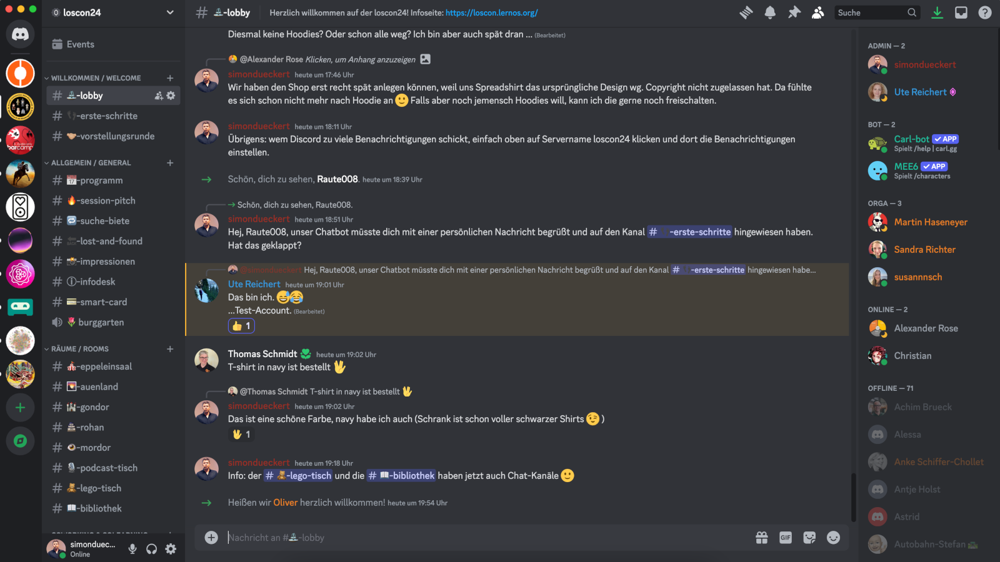

Discord
Alle Teilnehmer:innen werden auf den loscon24 Discord-Server eingeladen. Dort findet ihr z.B. die Einwahllinks für das Programm, den virtuellen Infodesk, die Chats zu den Breakout-Räumen (2nd-Screen-Ansatz: Chat in Teams ist deaktiviert) und viel Raum für den hybriden Austausch. Ihr könnt Discord im Browser oder als Desktop- bzw. Mobil-App nutzen. Weitere Informationen zu Discord findet ihr im Discord Hilfecenter.
Diese Kategorien (fett) und Kanäle haben wir im Server angelegt:

| Kategorie/Kanal | Beschreibung |
|---|---|
| Willkommen / Welcome | |
| lobby | Hier kommen alle an, ein Ort für ungezwungene Gespräche |
| erste-schritte | Die wichtigsten Tipps für Discord-Newbies |
| vorstellungsrunde | Hier könnt ihr Euch mit Name, Organisation, Bild, Hashtags, Links vorstellen |
| Allgemein / General | |
| programm | Links zum Programm und Teams-Einwahllinks für alle Räume |
| session-pitch | Hier können Sessionvorschläge für die 8 offenen Sessions an Tag 2 eingereicht werden |
| suche-biete | Alles, was ihr sucht oder bietet (Mitfahrgelegenheit, Hilfe etc.) |
| lost-and-found | Wenn was liegen bleibt oder gefunden wird hier posten |
| impressionen | Hier könnt ihr Schöne Bilder/Videos von der Veranstaltung teilen |
| ai-showroom | Hier könnt ihr Ergebnisse eurer KI-Experimente teilen (Prompts, Systemprompts, Ausgaben, Bilder etc.) |
| smart-card | Austausch zur Verwendund der neuen lernOS Smart Card |
| loscon24-chatbot | Austausch zu Nutzung und Erfahrungen mit dem loscon24 Chatbot |
| infodesk | Anlaufstelle bei allen Fragen, die in der FAQ nicht beantwortet werden |
| burggarten | Sprachkanal für ein entspannten Spaziergang im Burggarten |
| Räume / Rooms | |
| eppeleinsaal | Chat zum Programm im Eppeleinsaal (Bühne) |
| auenland | Chat zum Programm im Raum Auenland |
| gondor | Chat zum Programm im Raum Gondor |
| rohan | Chat zum Programm im Raum Rohan |
| mordor | Chat zum Programm im Raum Mordor |
| lego-tisch | Zwangloser Plausch am Lego-Tisch |
| bibliothek | Austausch und Buchbesprechung zur loscon24 Bibliothek |
| prompt-battle | Input-Kanal zum Prompt Battle im Abendprogramm |
| podcast-tisch (Text) | Koordination und Fragen zum Podcast-Tisch |
| podcast-tisch (Audio) | Sprachkanal, um Remote-Teilnehmer:innen in Podcasts einzubinden |
| Dezentrale Lokationen | |
| chat-bern | Text-Chat für die Lokation Bern |
| voice-bern | Sprach-Chat für die Lokation Bern |
| Coworking & Colearning | Hier sind Sprachkanäle angelegt, die ihr z.B. für Eure Learning Circle umbenennen und damit belegen könne. Die freien Tische können alle verwenden |
| anleitung | Kurze Anleitung, wie das Umbenennen der Kanäle funktioniert |
| tisch-x | Text- und Sprachkanäle für Euch, hier können wir beliebig viele anlegen. Ihr könnt sie nach Themen oder Namen eurer Learning Circle umbenennen. |
| Social Media | Videos von Youtube und RSS-Feed #loscon24 von Mastodon |
| mastodon | Hier postet unserer Bot alle Toots auf Mastodon mit Hashtag #loscon24. Wenn ihr noch kein Mastodon-Konto habt, legt gerne eines auf colearn.social an |
| youtube | Hier postet unserer Bot alle neuen Videos im Youtube Kanal von Cogneon (z.B. Aufzeichnungen der Sessions) |